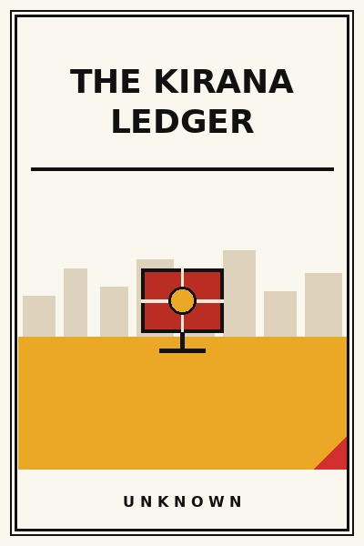

The Kirana Ledger
How unwritten neighborhood credit built India's retail engine.
READ FULL BREAKDOWN (FREE) →The Big Idea
The corner grocery khata book was the original decentralized credit bureau, built on social collateral that modern algorithms still struggle to replicate.
Key Lessons
Social Collateral as Underwriting
Neighborhood grocery stores survived centuries of currency crises because reputation in the mohalla was the loan collateral.
The Zero-Click Subscription
Long before automated software subscriptions, the morning milk and bread delivery was the original predictable recurring revenue.
Micro-SKU Optimization
A 150-square-foot shop holds four thousand essential items because shelf space is priced by daily turns.
The Listening Counter
The store counter is a community listening post, capturing shifts in neighborhood purchasing power before banks do.
Absorbing Volatility
Local store owners act as neighborhood shock absorbers, holding prices steady during supply spikes to protect relationships.
The Threat of Algorithmic Delivery
Ten-minute quick commerce burns venture capital to displace stores that built communal credit for generations.
Decentralized Inventory
Millions of small shops form a resilient nationwide inventory mesh that never experiences total system downtime.
The Enduring Ledger
Even as digital UPI QR codes replace cash, the human relationship at the counter remains the real economic anchor.
The Graveyard Proves It
Where this advice breaks: Where this advice breaks: informal trust credit breaks down instantly when neighbor mobility increases and communal ties dissolve.
Read the autopsy: air-india-decline →